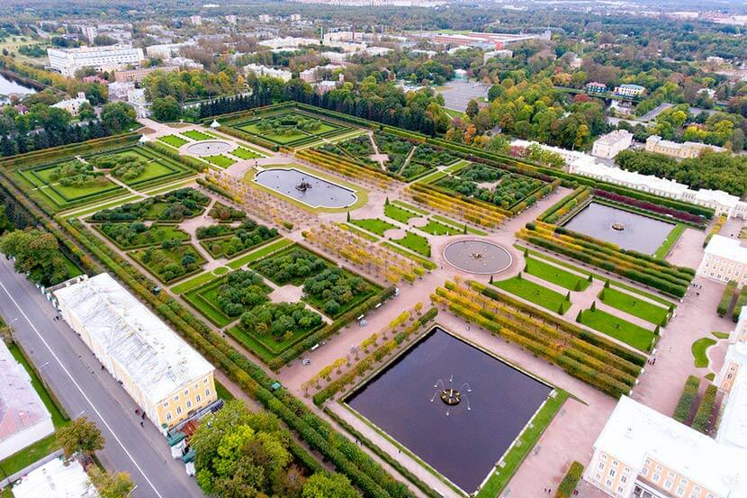
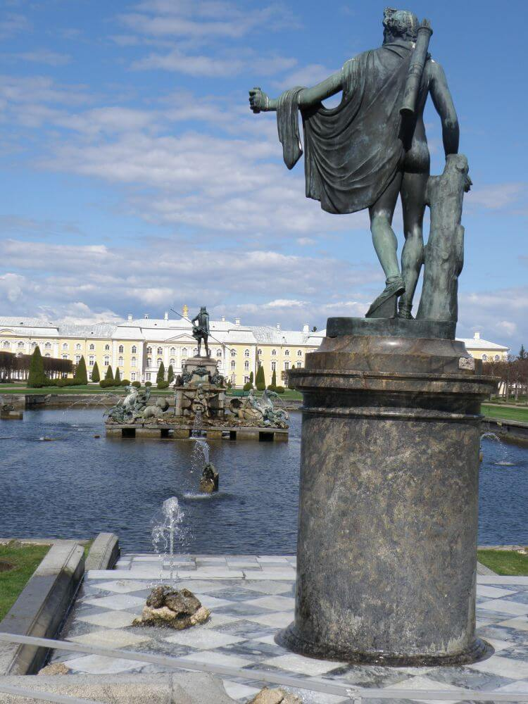
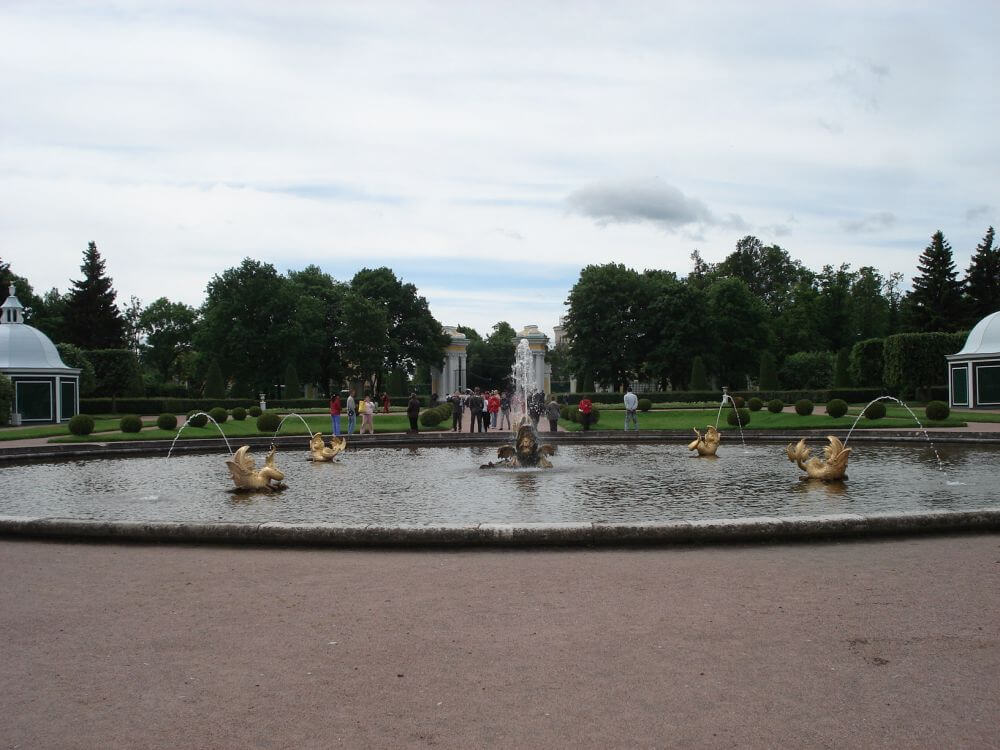
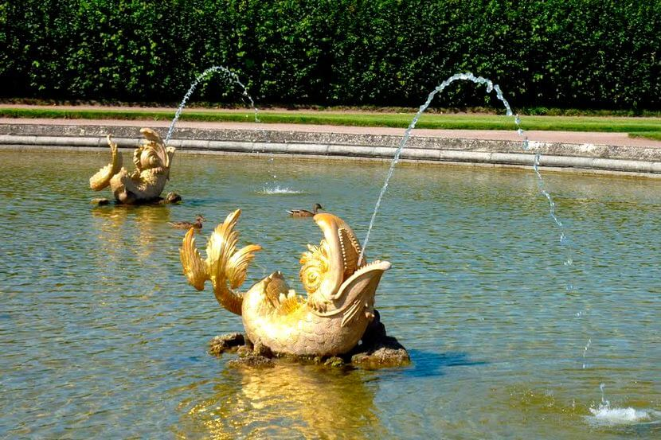
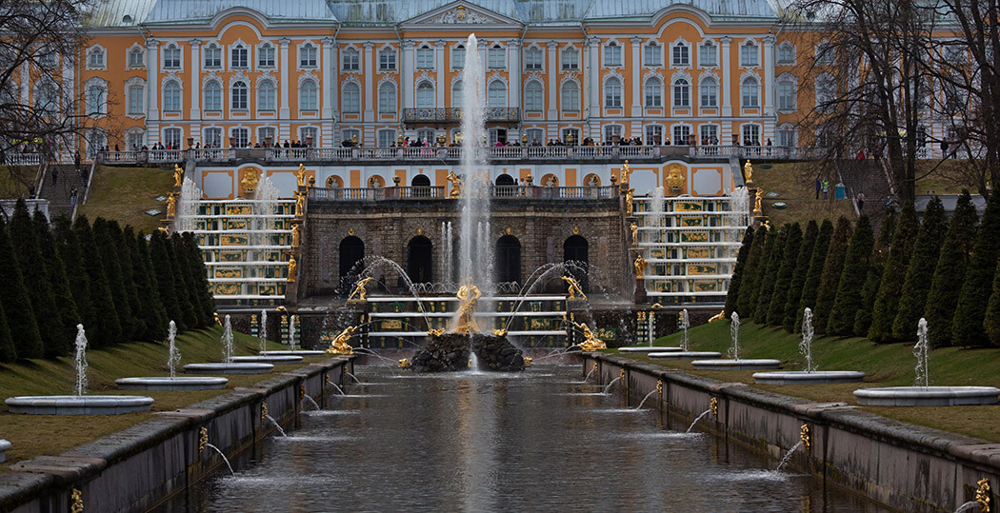
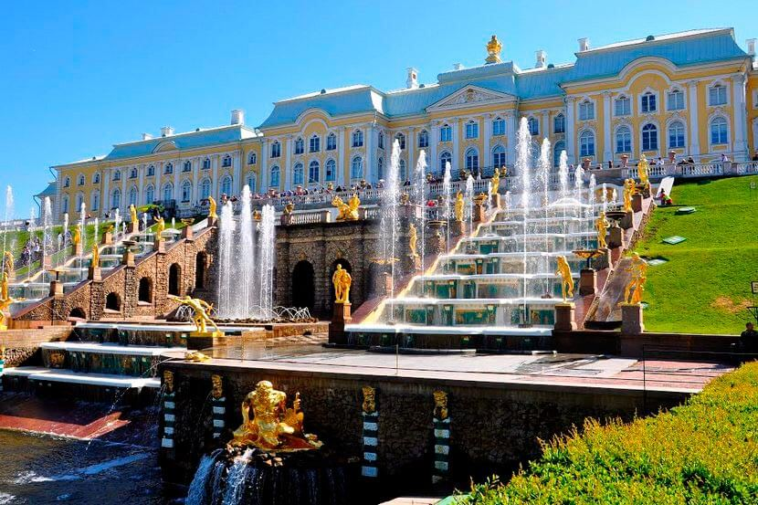
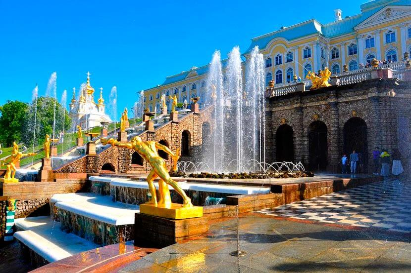

ФОНТАНЫ ПЕТЕРГОФА
Когда Петр I задумывал летнюю резиденцию под Санкт-Петербургом, он хотел, чтобы она получилась не менее роскошной, чем Версаль. Петергофские фонтаны и каскады поражают своим великолепием. Они были сделаны лучшими инженерами и скульпторами, и большинство из фонтанов исправно работает уже почти три сотни лет.

Возведение загородной резиденции в Петергофе началось в 1712 году, а через 3 года большое строительство затеяли в Стрельне. Петр хотел украсить парковый ансамбль нового дворца фонтанами или как их именовали в те времена «водными феериями». Однако, для того, чтобы фонтаны работали круглосуточно, инженеры должны были поднять воду до отметки в 10 м над уровнем моря. Окружающая Стрельну местность располагалась ниже этой отметки, и, если бы это произошло, территория оказалась затопленной.
Выход из непростой ситуации нашел гидротехник Бурхард Кристоф фон Мюнних, известный в России, как Христофор Антонович Миних. Он составил расчеты, доказал невозможность «водных феерий» в Стрельне и предложил перенести их в Петергоф, где природа сама позаботилась о подходящем ландшафте. Благодаря обильным родникам Ропшинских высот, фонтаны в Петергофе можно было сделать без использования насосов. Гидротехнические сооружения императорской резиденции возводили постепенно, и по своим масштабам они значительно превзошли версальские.

Фонтаны в Верхнем саду
Возвышенная часть петергофского парка была заложена еще при Петре I и использовалась для выращивания трав и овощей. Она имеет площадь 15 га и располагается на просторной террасе с южной стороны от Большого дворца. Все фонтаны в этой части Петергофа построили в 1730-е годы.

Фонтаны Квадратных прудов
Фонтаны квадратных прудов — это два фонтана, расположенных напротив Церковного и Гербового флигелей Большого Дворца. Форма их бассейнов выполнена в виде прямоугольников размером 54 на 45 метров, но не смотря на это, их называют квадратными. Сами бассейны были вырыты, по приказу Петра Первого, в 1721 году, они служили резервуарами для снабжения водой фонтанов Нижнего парка Петергофа.
Скульптурные группы, созданные Бартоломео Карло Растрелли, появились только в 1737 году. В западном квадратном пруду поместили свинцовую группу «Диана под деревом», в восточном пруду — статуи Прозерпины и Алфея. Фигуры окружали фонтанирующие дельфины. Во второй половине XVIII века скульптуры обветшали и в 1773 году центральные статуи заменили на фонтанные струи. В начале XX века в центре бассейнов появились скульптуры Весна и Лето.

Во время Великой Отечественной войны дельфины были похищены, а вся система водоснабжения разрушена. Водоемы были восстановлены в 1946 году, а сами фонтаны — в 1957 году. В настоящее время в квадратных прудах Петергофа, как и раньше, собирается вода для Нижнего парка, а украшают их скульптуры Весна и Лето, сохранившиеся до наших дней.

Фонтан ДУБОВЫЙ
Это первый фонтан Верхнего сада — он был построен в 1734 году по проекту архитектора Поля Суалема, Дуб, установленный в центре, шесть дельфинов и три тритона отлил из свинца скульптор и мастер-литейщик Бартоломео Карло Растрелли (Растрелли старший). Свинцовый дуб простоял здесь до 1746 года, а затем его перенесли в Нижний парк.

Сейчас в центре бассейна расположена скульптура «Амур, надевающий маску», установленная на горке из туфа в 1929 году. На шести каменных лучах, отходящих от центра, расположены дельфины, извергающие струи воды. За свою историю фонтан Дубовый в Петергофе несколько раз менял свое оформление, но сохранил свое первоначальное название.

Фонтан Нептун
Фонтан Нептун, созданный в 1737 году, занимает центральное место ансамбля Верхнего парка Петергофа. Первоначально его украшала свинцовая позолоченная скульптурная группа Нептунова телега. Композиция состояла из фигуры древнеримского царя морей и коляски, а также верховых на лошадях и дельфинов. На южной стороне бассейна был построен трехступенчатый каскад со статуей Зимы. К концу XVIII века скульптуры обветшали и были заменены на бронзовые, приобретенные императором Павлом I в Германии. Эти статуи были созданы кузнецом Георгом Шнейдером и скульптором Христофором Риттером в 1660 году для фонтана в Нюрнберге.

Скульптурная группа установлена в центре большого прямоугольного пруда размером 92 на 43 метра. На высоком гранитном постаменте возвышается статуя Нептуна с короной на голове и трезубцем в правой руке. На нижних ярусах пьедестала представлены фигуры нимф и дельфинов, тритонов и кораллов, всадников на морских лошадях с крыльями и прочих морских чудовищ. Во время Великой Отечественной войны немцы вывезли скульптуры в Германию и пришлось доказывать, что композиция является собственностью СССР. В 1947 году скульптурная группа вернулась в Петергоф. Недостающие фигуры были воссозданы и скульптурная группа установлена на прежнем месте. Статуя Аполлона Бельведерского заменила фигуру Зимы в каскаде и в 1956 году фонтан Нептун был вновь запущен.


Фонтан Межеумный
Рядом с главным входом в Верхний сад Петергофа расположен фонтан Межеумный, чье странное название означает «Неопределенный». Так он был назван по причине частой смены его оформления. Первоначально в 1738 году в круглом бассейне была установлена скульптурная группа «Андромеда», созданная по проекту архитектора Ивана Бланка. Однако, вскоре от композиции осталась лишь одна фигура змеи, а через год ее сменило изображение «Стерлядки».

Позже скульптурный декор менялся еще несколько раз. Один из вариантов композиций, особенно нравившийся зрителям, — это фонтанирующая ваза, высота струи которой время от времени менялась. Фонтан Межеумный пострадал во время войны и был восстановлен только в 1958 году. По рисункам XVIII века была создана композиция с крылатым драконом в центре и четырьмя дельфинами вокруг него.

Фонтаны Нижнего парка
Старейшая часть петергофского ансамбля занимает земли между Финским заливом и зданием Большого дворца. На территории в 102 га расположено более 140 фонтанов и каскадов.

Большой каскад
Большой каскад — это главное фонтанное сооружение Петергофа и ему нет равных по объему воды и размерам, роскоши и выразительности. Большой каскад является одним из самых крупных фонтанных сооружений мира — он состоит из трех водопадных лестниц и двух гротов, 75 фонтанов и 255 бронзовых скульптур, маскаронов и барельефов, а также других декоративных деталей.
Комплекс Большого каскада условно можно разделить на наружную часть, роскошную и великолепную, длина которой составляет 42 метра, а также подземную часть, расположенную под фонтанами — это Верхний и Нижний гроты, которые можно посетить с экскурсией.

С морем Большой каскад связан Морским каналом, имеющим ширину 12 метров. Вдоль него на газонах установлены 22 фонтана, вода в которых поднимается на четыре метра и напоминает хрустальные деревья. При Петре Первом по Морскому каналу легкие суда проходили в гавань к Большому дворцу.
В центральной части Большого каскада, там, где находится Нижний (Большой) грот, расположен фонтан "Корзина", 28 наклонных струй которого переплетаются словно прутья цветочной корзинки. Справа и слева расположены две каскадные лестницы в семь ступеней, в качестве украшений которых используются золоченые барельефы, а также скульптуры, чередующиеся с вазами. Выше Нижнего грота располагается Верхний (Малый) грот с террасой, огражденной мраморной балюстрадой, украшенной вазами. В разрыве ограждения установлены скульптуры трубящих тритонов.

Фонтан «Самсон» - символ победы в Северной войне
Фонтан «Самсон» расположен в Нижнем парке Петергофа, в центре бассейна Большого каскада, а полное его название — «Фонтан Самсон, раздирающий пасть льва». Это самый большой фонтан Большого каскада, высота его струи достигает 21 метра.
Петр Первый планировал установить у подножия Большого каскада фонтан со статуей Геракла, побеждающего Лернейскую гидру. Однако, его планам не суждено было сбыться. Только в 1835 году при императрице Анне Иоанновне в честь 25-летия победы над шведами в Полтавской битве был установлен фонтан «Самсон, раздирающий пасть льва». Победа над шведами была одержана 27 июня 1709 года, в День Святого Сампсония, а фигура льва символизировала врага, поскольку лев изображен на флаге Швеции. Таким образом, Самсон символизирует величие Российского государства, а поверженный лев — символ побежденной Швеции.

Вода в фонтанную систему Петергофа, в том числе и к Самсону, подается самотеком с Ропшинских высот. По шлюзам и каналам она собирается в прудах-резервуарах на верхней террасе и затем по подземным трубам устремляется к фонтанам и каскадам Нижнего парка. Фонтанная система Петергофа оригинальна: в отличие от Версаля, где используются специальные водоподъемные устройства, здесь вода поднимается на высоту в 21 метр без каких-либо насосов, только за счет перепада давления.
В конце декабря 2010 года фонтан Самсон был демонтирован и отправлен на реставрацию. Чтобы золото как можно дольше не смывалось водой, скульптуры покрыли двойным слоем сусального золота, а сверху нанесли два слоя специального особо прочного лака. Всего на восстановление позолоты скульптурной композиции ушел почти килограмм чистейшего сусального золота. В апреле 2011 года фонтан «Самсон, разрывающий пасть льва» был вновь открыт и солнце снова заиграло на позолоте скульптуры, придавая ей силу и выразительность.

Фонтаны Чаши
У подножия Большого каскада в Петергофе среди больших цветников, по обеим сторонам от Самсона расположены фонтаны Большие Чаши. Если смотреть на Финский залив, то слева находится фонтан, который называют западным или «итальянским», поскольку гидротехническую систему к нему и бассейн построили итальянские мастера, братья Дасованни и Джулиано Баратини. На другой стороне расположен такой же фонтан, выполненный французом Полем Суалемом, поэтому восточный фонтан получил имя «французский».

Первоначально к этим парным фонтанам были изготовлены дубовые чаши, которые покрыли свинцом и покрасили под мрамор, а в 1854 году их заменили на чаши из каррарского мрамора, вес каждой из них составил 17 тонн. Бассейны фонтанов выстланы черными и белыми мраморными плитами.

Каскад «Золотая гора» - живописные фонтаны в Марлинском саду
Свое название каскад Золотая гора в Петергофе получил из-за блеска позолоченных ступеней, а также благодаря праздничной и торжественной гамме всего ансамбля.

При застройке Нижнего парка Петр Первый придерживался принципа: каждому дворцу — свой каскад и, согласно его замыслу, для Марлинского дворца рядом с одноименным прудом был возведен Марлинский или Золотой каскад. Каскад Золотая гора построен в форме прямоугольника, центральная часть которого представляет собой лестницу протяженностью в 14 метров и состоящую из 21 ступеней, облицованных мрамором. Отвесные стенки уступов покрыты медными позолоченными листами, по которым стекают серебристые струи воды.

Каскад «Шахматная гора» - от грота к гроту
Каскад Шахматная гора расположен на естественном склоне в восточной части Нижнего парка Петергофа. Каскад состоит из четырех скатов, каждый из которых оформлен в виде шахматной доски. Вода стекает по уступам в полукруглый бассейн у основания склона. Каскад Шахматная гора выходит на самую большую площадь Нижнего парка, от которой, словно веером, расходятся пять аллей, ведущих к Большому дворцу, дворцу Марли и фонтану Адам, дворцу Монплезир и фонтану Пирамида.

Композиция включает в себя Верхний и Нижний гроты, а также четыре прямоугольных ската, покрытых тонким сверкающим слоем воды и напоминающих огромные зеркала. Массивная дверь в Верхний грот закрыта, его охраняют три грозных дракона. Вода вырывается из пастей зверей и пробежав 32 метра падает в бассейн, закрывая водяным занавесом вход в Нижний грот.

Львиный каскад - красота античной колоннады
Львиный каскад отличается от других фонтанов Петергофа своей строгостью и лаконичностью, сдержанностью и отсутствием позолоченных деталей. Львиный каскад получил свое название по статуям львов, установленным рядом с колоннадой, а первоначально он назывался Эрмитажным, поскольку располагается на аллее, ведущей к павильону Эрмитаж. Львиный каскад построен в стиле позднего классицизма по проекту архитектора Андрея Штакенштейнера.

Фонтан появился только в 1801 году. Его соорудили по проекту другого, не менее именитого зодчего - Андрея Никифоровича Воронихина, а водопроводящую систему сделали под руководством мастера фонтанного дела Федора Алексеевича Стрельникова. В те времена каскад занимал большой бассейн, где стояли восемь плоских фонтанных чаш из мрамора. Новый «Эрмитажный» каскад также украшали статуи Флоры и Геркулеса. Спустя всего год, скульптуры заменили бронзовыми львами, изготовленными известным скульптором Иваном Прокофьевичем Прокофьевым. После этого каскад стали называть «Львиным».

Фонтаны-шутихи - веселые водные феерии Петергофа
Самыми любимыми у гостей Нижнего парка считаются забавные фонтаны-шутихи. Они различаются оформлением и спрятаны в разных местах Петергофа. Если кто-то подходит к шутихам близко или касается их отдельных частей, на туристов начинают вылетать тонкие пенистые струи воды. Искать веселые фонтаны долго не приходится, потому что возле них всегда слышен громкий смех.
Водяная дорога расположена на Монплезирской аллее Петергофа (Петродворца), в самом ее начале недалеко от площади Шахматной горы. В течение 30 секунд 300 струй воды с двух сторон обрызгивают всех, кто пробежит участок Водяной дороги, а увернуться от рукотворного дождя невозможно. Этот фонтан был также придуман Петром Первым в 1721 году.

В 1735 году знаменитый литейщик Бартоломео Карло Растрелли изготовил свинцовое дерево с позолоченными листьями для украшения одного из круглых бассейнов, расположенных в Верхнем саду. Металлический дуб простоял там до середины XVIII века. В 1802 году его отреставрировали и поставили в Нижнем парке. На одном из зеленых боскетов, примыкающих с запада к живописной Монплезирской аллее, была построена новая водная шутиха. Чтобы «Дубок» не слишком выделялся среди пышной зелени парка, его ствол и листья окрасили под натуральное дерево.
Полый ствол поднимается на высоту 6 м. Отлитые из свинца складки очень напоминают настоящую древесную кору, а «дубовые» листья выполнены из листовой меди. Внутри «Дубок» полностью заполняется водой, и водные струи вырываются из 500 тонких веток дерева. Вокруг «растут» пять изящных тюльпанов, которые тоже являются маленькими водометами. Вода бьет прямо из ярко раскрашенных цветков.

Две совсем скромные безобидные скамейки, спинки которых украшают позолоченные маскароны тритонов, расположены в Монплезирском саду. Но стоит только ступить на брусчатку рядом со скамейкой, как буквально из-под земли поднимутся струи воды и окатят гостей парка.

Фонтан Скамейки относится к самым ранним Шутихам Петергофа, он был создан по рисункам Петра Первого в 1723 году.